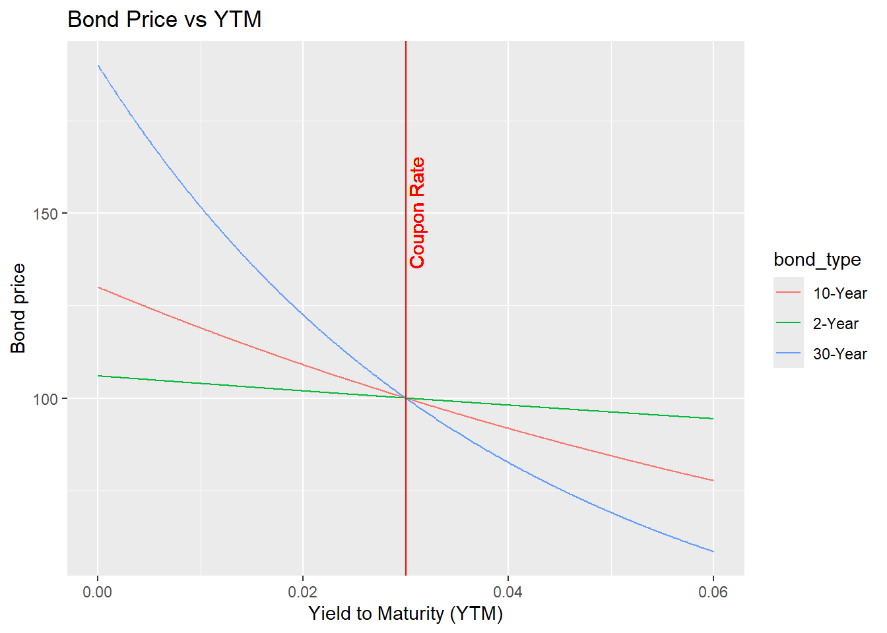
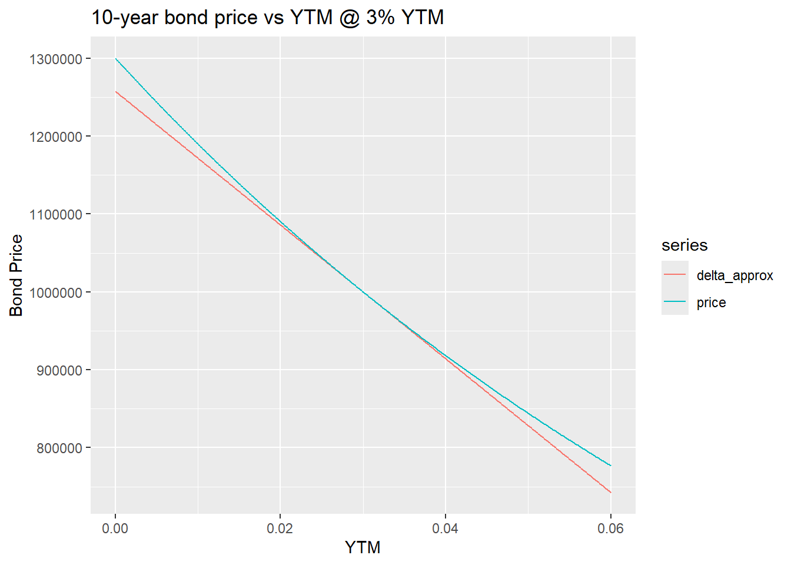
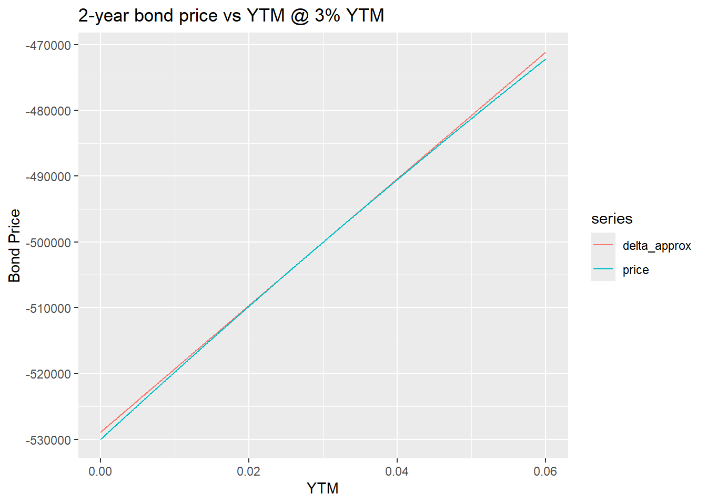
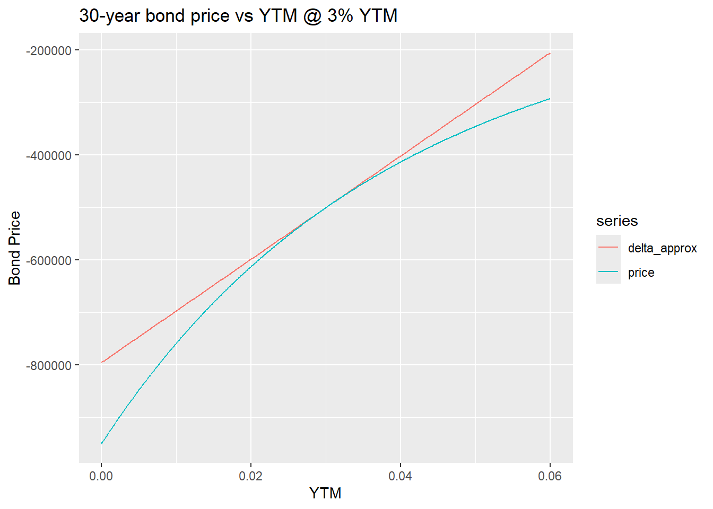
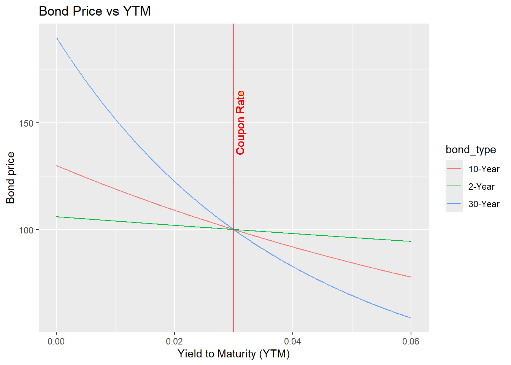
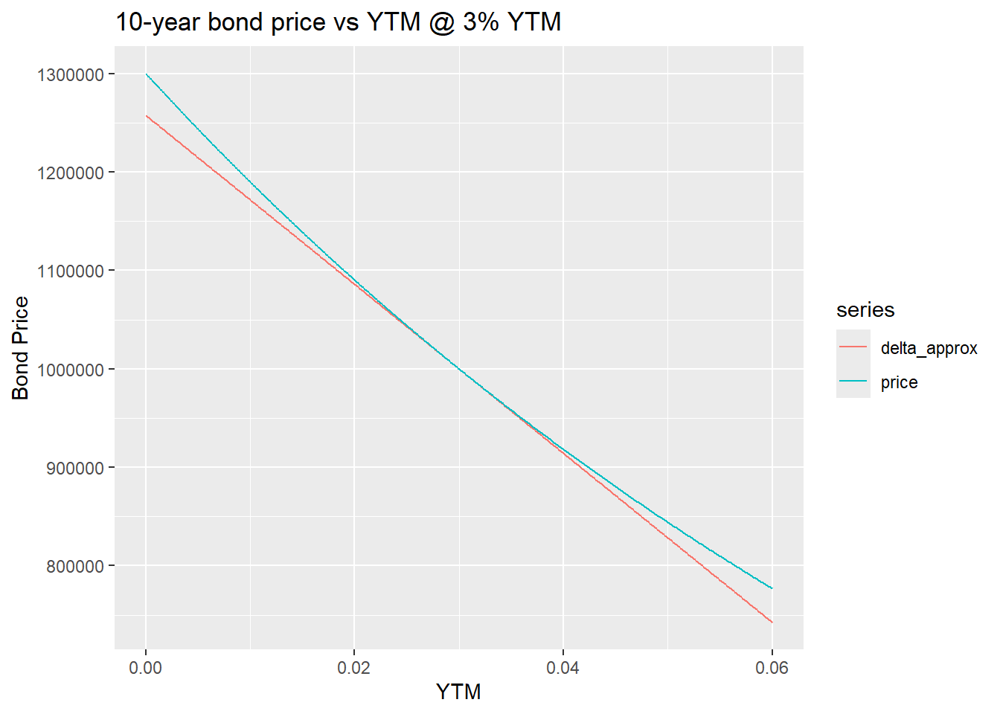
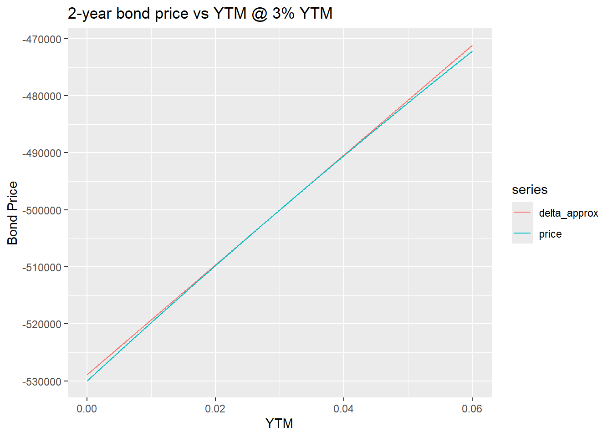
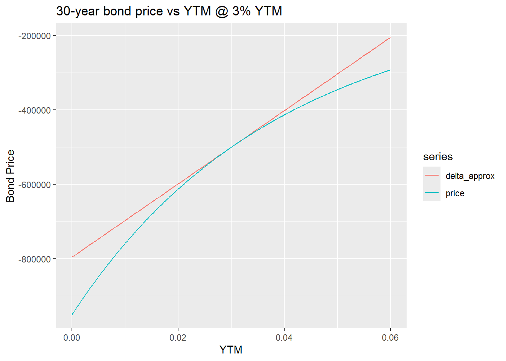
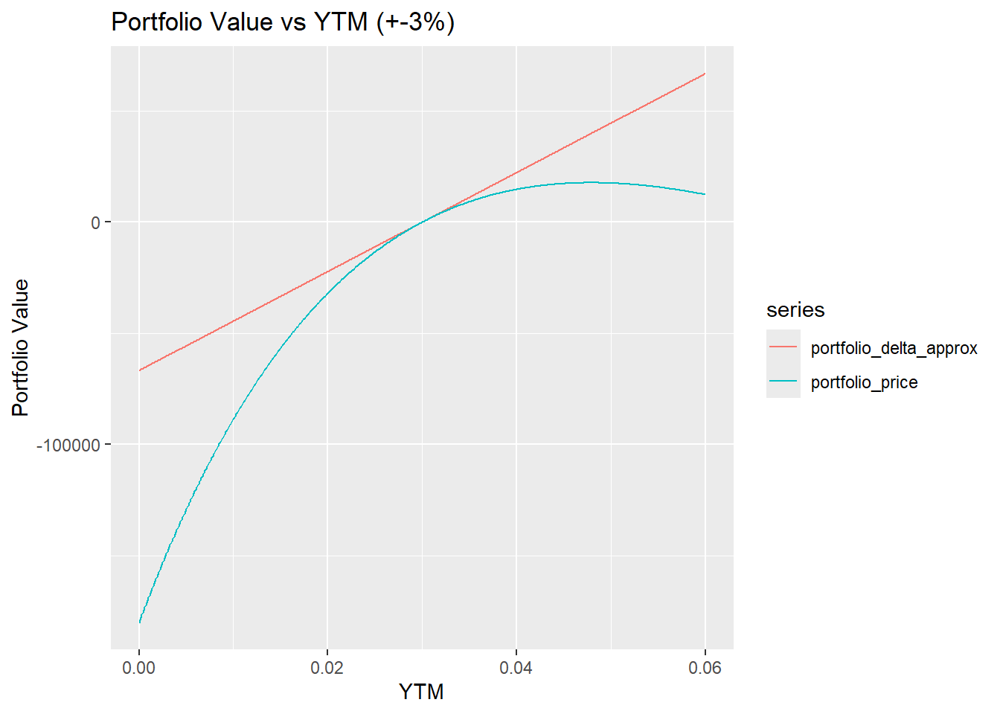

Individual Project
Austin Kaduk
March 21, 2025
Imagine you are a portfolio manager at a fixed-income investment firm. Your primary responsibility is to manage interest rate risk across a diverse bond portfolio. You are tasked with analyzing how various interest rate movements impact your portfolio’s value and using quantitative tools to estimate, visualize, and interpret these risks. Your goal is to provide insights that will help guide strategic decisions for hedging and optimizing the portfolio.
As a Finance graduate, you will draw on the skills you have learned in fixed income valuation, and be expected to use current data for interest rates in the US Treasury market. You will need to round you the YTMs and Coupons of each bond to the last business day of the month prior to this assigment being given to you.
You will recreate numerical sensitivities (Delta and Gamma) for specific bond positions and assess how changes in interest rates affect the portfolio’s P&L. The focus will be on both individual bonds and the overall portfolio, with practical applications for risk management.
The bond positions you have are:
You may use the RTL::bond() pricing function.




Now show a chart of portfolio change in price (y-axis) vs YTM (x-axis) for \(\pm\) 3% change in YTM.

Show the initial delta (stepsize = 1 bp, central difference) of the portfolio.
| PortfolioDelta |
|---|
| 222.4354 |
Show a delta/gamma PL estimate vs actual PL when YTMs change as follows:
| Bond | Maturity | ActualPL | DeltaPL | GammaPL | PLEst | PLUnattributed |
|---|---|---|---|---|---|---|
| 1 | 10 | −$62,064.02 | −$64,382.41 | $2,378.75 | −$62,003.65 | −$60.37 |
| 2 | 2 | $4,788.68 | $4,817.98 | −$29.44 | $4,788.54 | $0.14 |
| 3 | 30 | $86,902.22 | $98,450.79 | −$12,636.73 | $85,814.06 | $1,088.16 |
| Total | $29,626.87 | $38,886.37 | −$10,287.42 | $28,598.95 | $1,027.93 |
Discuss the learnings and insights in IR valuation and risk management. You explanation must: + Tell me something valuable from a delta and gamma risk perspectives, and + Have a focus on Pay particular attention to real world bond markets versus textbook examples.
Delta measures the sensitivity of a bond or portfolio of bonds’ price to small changes in yield. In textbook explanations, delta is assumed to have a linear relationship between price and yield, but in the real world, this assumption is less helpful for larger yield movements because the price to yield relationship is convex. This is where gamma is important, gamma measures the rate at which delta changes as yields fluctuate. If gamma is high, delta is unstable, which means that hedging strategies that are based solely on delta become ineffective as interest rates shift.
In our portfolio, we are dollar-neutral but not risk-neutral. While the value of our positions sums to zero, we are exposed to risk due to the different maturities and convexities of the bonds. Long-term bonds have a more extreme convexity profile. Our portfolio’s delta flips from long to short ~ 4.75% YTM because as yields rise, the short 30-year bond, having the highest convexity, dominates the overall risk profile. Meanwhile, the shorter-term bonds (2-year and 10-year) lose influence more quickly. Making gamma an essential factor in our P&L attribution analysis.
Hedging purely based on dollar value and/or delta exposes the portfolio to second-order risks, which can lead to significant P&L attribution errors during non-parallel changes in the yield curve. When looking for real-world examples, I found that the LTCM collapse in 1998 was a good example of how a theoretically neutral strategy can dissolve when gamma exposure is ignored. They bet on convergence trades in fixed income, believing that bond spreads would narrow over time. While they were dollar-neutral and duration-neutral, they had significant basis risk and tail risk, meaning they were short gamma with respect to spread widening, making them vulnerable to changing market conditions. The Asian/Russian crises of 1997-98 caused yields to fall while swap yields and off-the-run yields did not fall as much. The difference moved against them massively, and they ended up with a $4 billion loss in weeks; with around $1.6 billion due to the swap spread widening.
Managing risk purely through duration (delta) is insufficient and incorporating convexity (gamma) helps ensure that a portfolio remains stable during market shifts. It is important as a risk manager to incorporate other tools such as swaps which are typically used for adjusting directional delta exposure, bond futures that provide liquidity for managing rate risk, and options (swaptions) that are effective for hedging gamma risk but can be expensive in volatile environments.
The key takeaway I got from this project is that simply being dollar-neutral does not mean being risk-neutral. While delta explains first-order price changes, gamma determines how those price sensitivities evolve, making it one of the most crucial considerations in portfolio risk management, especially when dealing with differing convexity profiles like the one we analyzed.
In regards to Vega, “Speed”, and higher order derivatives. Vega risk is essentially zero in a straight bond portfolio because the cash flows are fixed with no volatility parameter affecting their value like an option has. However, in bonds with embedded options, such as callable bonds or MBS, Vega risk can arise. For bonds, gamma changes gradually as a bond ages or yields move. This is why third-order effects like “Speed” (the rate of change of gamma) are extremely small relative to Delta and Gamma.